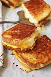

Grilled Cheese

Description
<Do you have a taste for a pub style burger but don't want to leave the house and spend a bunch of money?
Well now you can make the same burger at home in your pajamas. How exciting is that?! So I have always wondered what and how they made the burger so tasty.And now I figured out the secret and I am going to share it with you. As you read on, you will see the ingredients and steps needed to make this mouth watering burger!
Beow is a list of what you will need to make this perefect burger.
Ingredients
- 2 slices of bread
- 1 slice of American Cheese
- 1 tbs butter
- 1 slice of Pepperjack Cheese
Steps
- heat up a skillet on med heat
- butter both sides of each slice of bread
- once the skillet is hot, place both slices of bread on skillet
- flip once slice of bread over and place both slices of cheese on the cooked side of the bread
- place other slice of bread on top of the cheese (cooked side down)
- grill for 2-3 minutes and then flip
- grill for another 2-3 minutes
- remove grilled cheese from skillet and enjoy!
Home